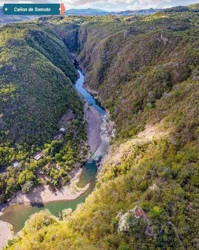

El Sendero lo Abren las Comunidades
Baqueano no existe para llevar más turistas a los mismos lugares. Existe para transformar el turismo en una actividad más responsable, distribuida, segura, culturalmente consciente y beneficiosa para las familias campesinas de Nicaragua.

Los 5 Impactos Fundamentales de Baqueano
Baqueano evalúa y cumple de forma transparente cada uno de los criterios exigidos para proyectos de alto valor socioecológico y viabilidad sostenible.
Impacto Ambiental & Custodia
Turismo de huella cero. Monitoreo constante de la capacidad de carga en senderos frágiles, prohibición de plásticos de un solo uso y canal de denuncias ciudadanas georreferenciadas.
- Decálogo verde de obligatorio cumplimiento
- Protección activa de cuencas y lagunas de cráter
- Conservación de fauna silvestre nativa
Impacto Social & Comunitario
Empoderamiento del campesino como dueño legítimo de su destino turístico. Inclusión de mujeres y jóvenes rurales como embajadores culturales, traductores y custodios del bosque.
- Capacitación continua en primeros auxilios y rescate
- Respeto absoluto a la privacidad comunitaria
- Fondos compartidos para escuelas y caminos rurales
Impacto Económico & Distribución
Ruptura del monopolio de plataformas transnacionales que retienen hasta el 25% de los ingresos. El 100% de la tarifa pactada llega a la mano del guía y la cooperativa anfitriona.
- Cero intermediarios abusivos en la reserva
- Dinamización de comedores y posadas familiares
- Régimen fiscal transparente con Ley 306 INTUR
Gobernanza, Ética & Legalidad
Cumplimiento estricto del marco jurídico nacional (Ley 306 de Incentivos Turísticos, Ley 217 del Medio Ambiente). Transparencia contable bimoneda y arquitectura de datos cifrada en Firestore.
- Sincronización oficial con normativas INTUR
- Centro de telemetría y contingencia en tiempo real
- Protocolos de seguridad certificados y balizas SOS
Cultura, Memoria & Soberanía
Rescate de la memoria histórica de Nicaragua: las 7 eras fundacionales, la cosmovisión del maíz, las leyendas campesinas, el son tradicional de marimba y la sabiduría botánica ancestral.
- Módulo insignia de los 17 territorios soberanos
- Vitrina gastronómica de las abuelas campesinas
- Patrimonio sonoro a 1 toque con música folclórica
Centro de Auxilio SOS Satelital
Balizas de geolocalización satelital que funcionan incluso en zonas de montaña sin señal telefónica. Enlace inmediato con Cruz Blanca (128), Bomberos (115) y Policía Turística (101).
- Coordenadas GPS exactas en 1 toque
- Despacho automático de auxilio por WhatsApp
- Red de guías en alerta permanente
Explora las Páginas del Ecosistema
Cada sección del proyecto ha sido organizada en su propia página dedicada, permitiendo un control impecable de tipografía, música, videos, fotografías y herramientas interactivas.
Historia de Mi País
Línea de tiempo cronológica desde los pueblos originarios hasta la soberanía actual, más el explorador de los 17 territorios.
Campaña Ambiental & Denuncias
El Decálogo Verde del explorador, formulario de denuncias ciudadanas con coordenadas satelitales y pasaporte ético.
Gastronomía Ancestral del Maíz
Gallo Pinto, Nacatamal, Vigorón, Quesillo, Baho e Indio Viejo con fotografías reales e ingredientes de la milpa.
Patrimonio Sonoro Folclórico
Reproductor directo para La Mora Limpia, El Solar de Monimbó, Baile del Mestizaje, El Zanatillo y Palomita Guasiruca.
Cooperativas & Alojamientos 3D
Tarjetas tridimensionales interactivas de posadas rurales y guías comunitarios con contacto directo sin intermediarios.
Catálogo & Calculadora de Retorno
Filtro de destinos protegidos, calculadora del ahorro del 20% frente a OTAs foráneas y cotizador con régimen de Ley 306.
Descarga Baqueano para Android
La aplicación oficial con mapas topográficos sin conexión a internet, baliza satelital SOS 24/7 y contacto directo con las cooperativas campesinas.